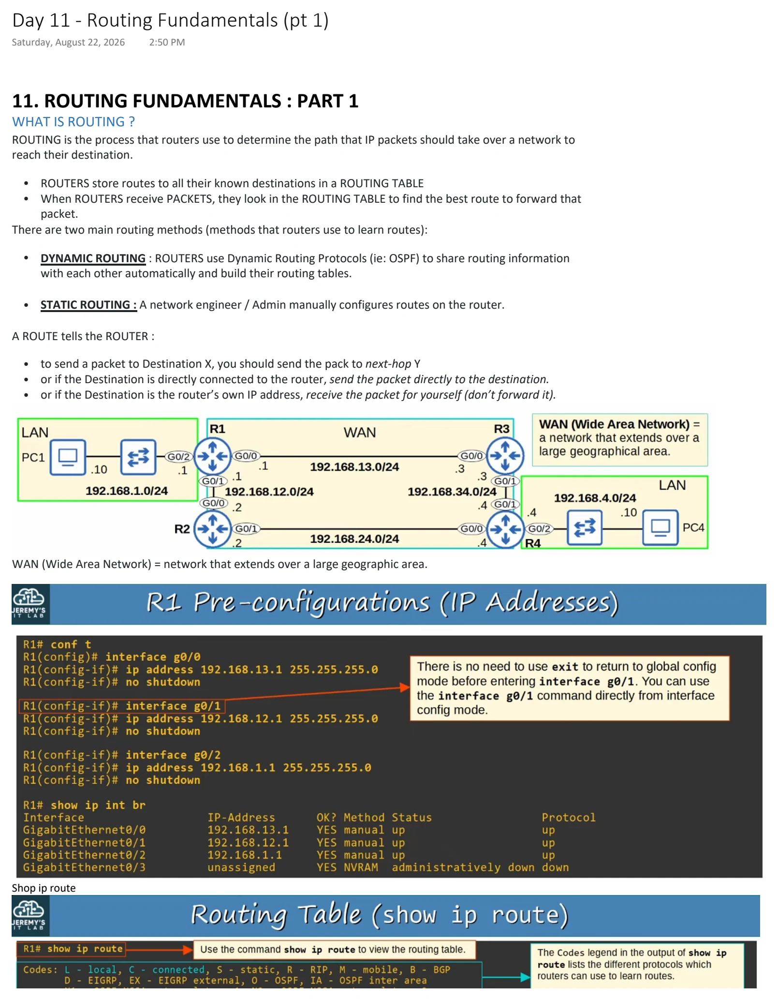
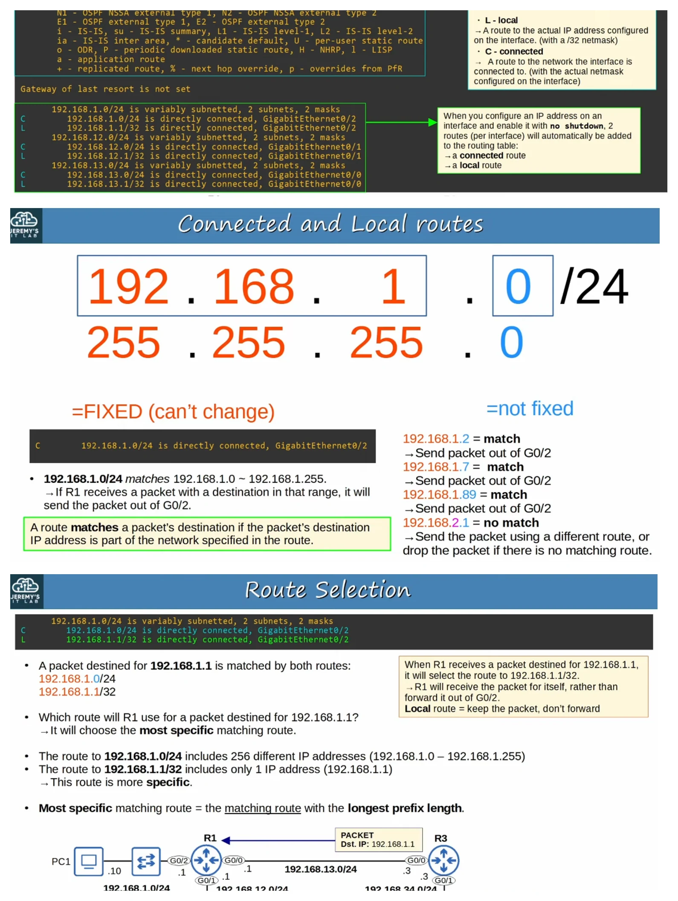
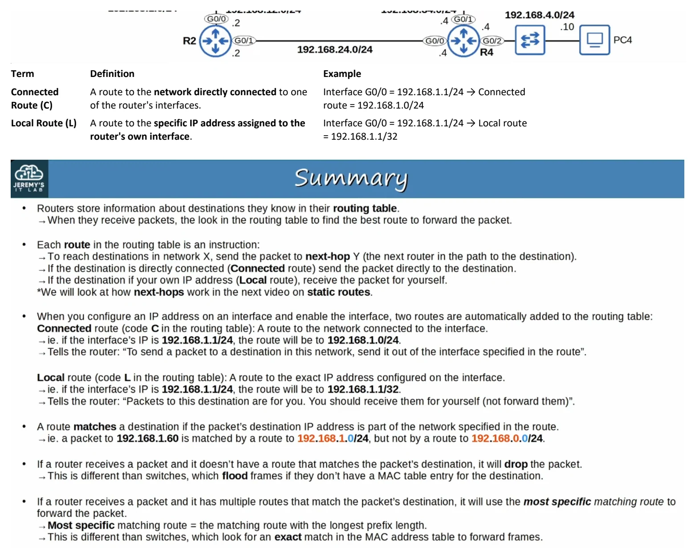
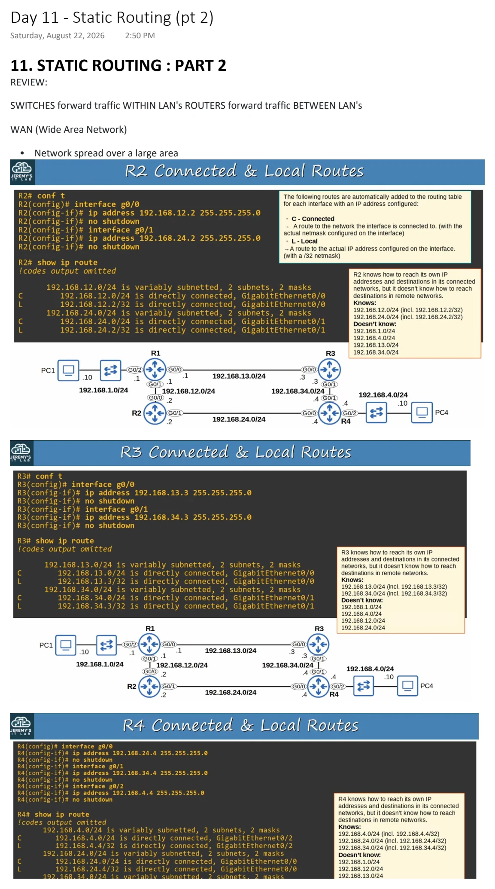
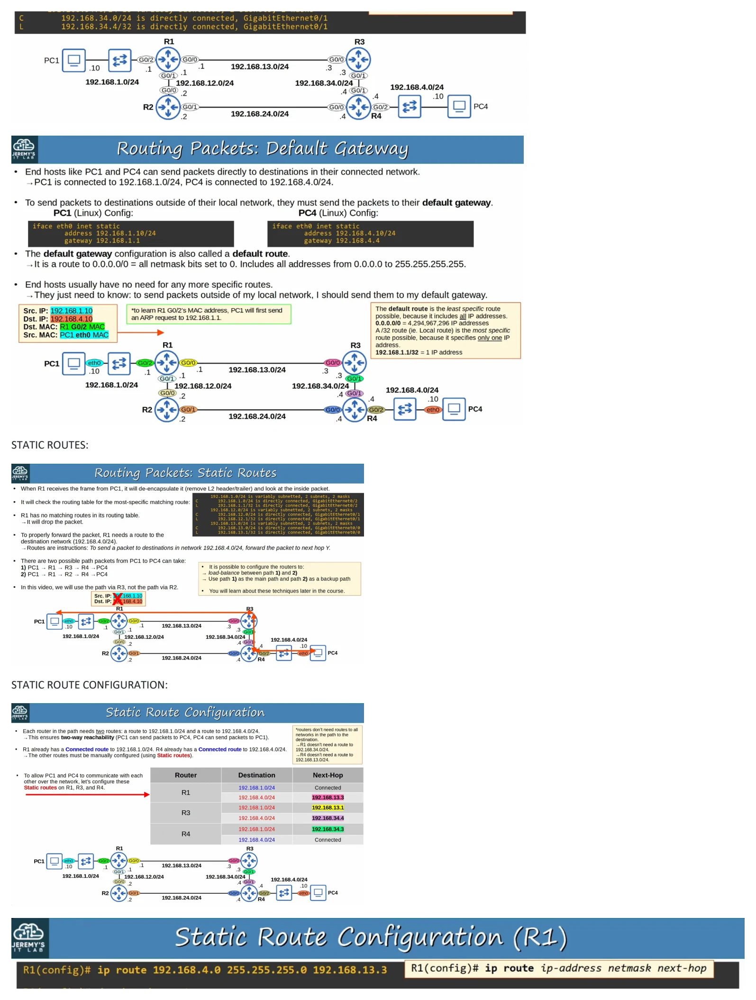
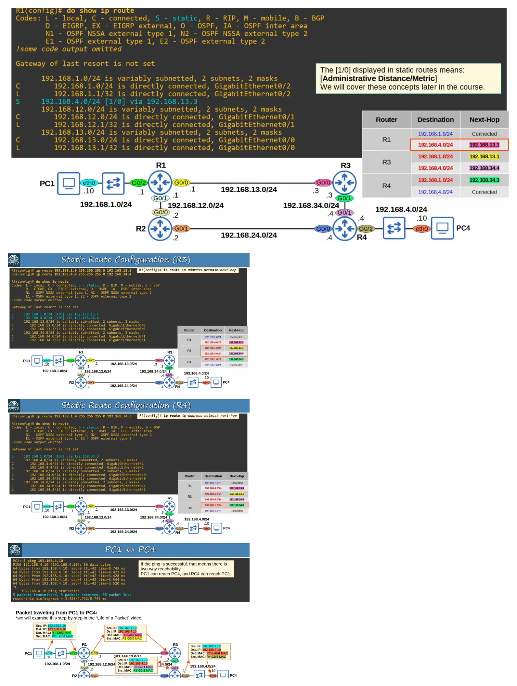
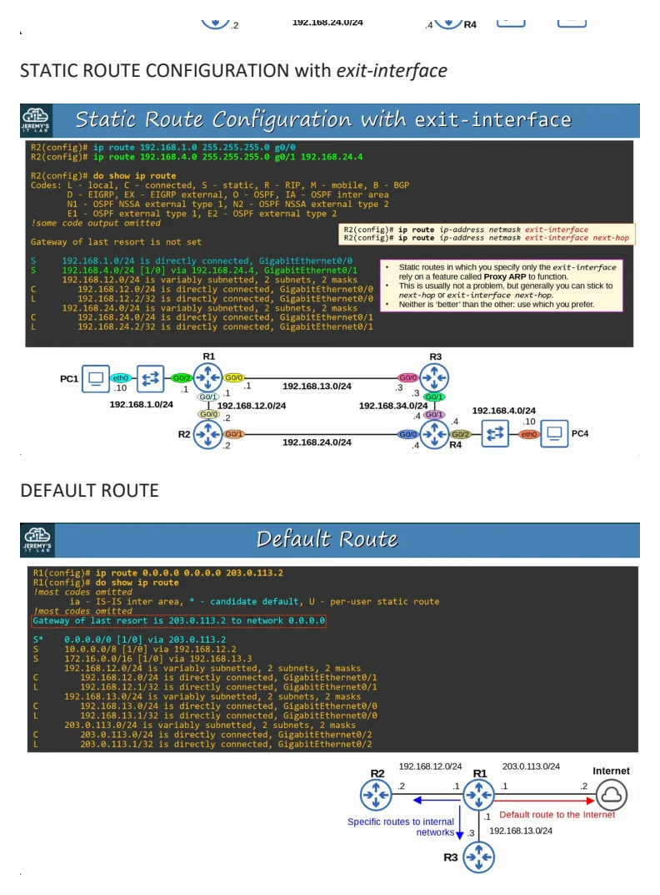

Routing Fundamentals (pt 1)
Download original PDF


Text view — Routing Fundamentals (pt 1)
Extracted from the original export. Diagrams and some formatting appear in the notes above.
Day 11 - Routing Fundamentals (pt 1) Saturday, August 22, 2026 2:50 PM 11. ROUTING FUNDAMENTALS : PART 1 WHAT IS ROUTING ? ROUTING is the process that routers use to determine the path that IP packets should take over a network to reach their destination. • ROUTERS store routes to all their known destinations in a ROUTING TABLE • When ROUTERS receive PACKETS, they look in the ROUTING TABLE to find the best route to forward that packet. There are two main routing methods (methods that routers use to learn routes): • DYNAMIC ROUTING : ROUTERS use Dynamic Routing Protocols (ie: OSPF) to share routing information with each other automatically and build their routing tables. • STATIC ROUTING : A network engineer / Admin manually configures routes on the router. A ROUTE tells the ROUTER : • to send a packet to Destination X, you should send the pack to next-hop Y • or if the Destination is directly connected to the router, send the packet directly to the destination. • or if the Destination is the router’s own IP address, receive the packet for yourself (don’t forward it). WAN (Wide Area Network) = network that extends over a large geographic area. Shop ip route Term Definition Example Connected A route to the network directly connected to one Interface G0/0 = 192.168.1.1/24 → Connected Route (C) of the router's interfaces. route = 192.168.1.0/24 Local Route (L) A route to the specific IP address assigned to the Interface G0/0 = 192.168.1.1/24 → Local route router's own interface. = 192.168.1.1/32 Day 11 - Routing Fundamentals (pt 1) Saturday, August 22, 2026 2:50 PM 11. ROUTING FUNDAMENTALS : PART 1 WHAT IS ROUTING ? ROUTING is the process that routers use to determine the path that IP packets should take over a network to reach their destination. • ROUTERS store routes to all their known destinations in a ROUTING TABLE • When ROUTERS receive PACKETS, they look in the ROUTING TABLE to find the best route to forward that packet. There are two main routing methods (methods that routers use to learn routes): • DYNAMIC ROUTING : ROUTERS use Dynamic Routing Protocols (ie: OSPF) to share routing information with each other automatically and build their routing tables. • STATIC ROUTING : A network engineer / Admin manually configures routes on the router. A ROUTE tells the ROUTER : • to send a packet to Destination X, you should send the pack to next-hop Y • or if the Destination is directly connected to the router, send the packet directly to the destination. • or if the Destination is the router’s own IP address, receive the packet for yourself (don’t forward it). WAN (Wide Area Network) = network that extends over a large geographic area. Shop ip route Term Definition Example Connected A route to the network directly connected to one Interface G0/0 = 192.168.1.1/24 → Connected Route (C) of the router's interfaces. route = 192.168.1.0/24 Local Route (L) A route to the specific IP address assigned to the Interface G0/0 = 192.168.1.1/24 → Local route router's own interface. = 192.168.1.1/32 Day 11 - Routing Fundamentals (pt 1) Saturday, August 22, 2026 2:50 PM 11. ROUTING FUNDAMENTALS : PART 1 WHAT IS ROUTING ? ROUTING is the process that routers use to determine the path that IP packets should take over a network to reach their destination. • ROUTERS store routes to all their known destinations in a ROUTING TABLE • When ROUTERS receive PACKETS, they look in the ROUTING TABLE to find the best route to forward that packet. There are two main routing methods (methods that routers use to learn routes): • DYNAMIC ROUTING : ROUTERS use Dynamic Routing Protocols (ie: OSPF) to share routing information with each other automatically and build their routing tables. • STATIC ROUTING : A network engineer / Admin manually configures routes on the router. A ROUTE tells the ROUTER : • to send a packet to Destination X, you should send the pack to next-hop Y • or if the Destination is directly connected to the router, send the packet directly to the destination. • or if the Destination is the router’s own IP address, receive the packet for yourself (don’t forward it). WAN (Wide Area Network) = network that extends over a large geographic area. Shop ip route Term Definition Example Connected A route to the network directly connected to one Interface G0/0 = 192.168.1.1/24 → Connected Route (C) of the router's interfaces. route = 192.168.1.0/24 Local Route (L) A route to the specific IP address assigned to the Interface G0/0 = 192.168.1.1/24 → Local route router's own interface. = 192.168.1.1/32
Static Routing (pt 2)
Download original PDF



Text view — Static Routing (pt 2)
Extracted from the original export. Diagrams and some formatting appear in the notes above.
Day 11 - Static Routing (pt 2) Saturday, August 22, 2026 2:50 PM 11. STATIC ROUTING : PART 2 REVIEW: SWITCHES forward traffic WITHIN LAN's ROUTERS forward traffic BETWEEN LAN's WAN (Wide Area Network) • Network spread over a large area STATIC ROUTES: STATIC ROUTE CONFIGURATION: STATIC ROUTE CONFIGURATION with exit-interface DEFAULT ROUTE Day 11 - Static Routing (pt 2) Saturday, August 22, 2026 2:50 PM 11. STATIC ROUTING : PART 2 REVIEW: SWITCHES forward traffic WITHIN LAN's ROUTERS forward traffic BETWEEN LAN's WAN (Wide Area Network) • Network spread over a large area STATIC ROUTES: STATIC ROUTE CONFIGURATION: STATIC ROUTE CONFIGURATION with exit-interface DEFAULT ROUTE Day 11 - Static Routing (pt 2) Saturday, August 22, 2026 2:50 PM 11. STATIC ROUTING : PART 2 REVIEW: SWITCHES forward traffic WITHIN LAN's ROUTERS forward traffic BETWEEN LAN's WAN (Wide Area Network) • Network spread over a large area STATIC ROUTES: STATIC ROUTE CONFIGURATION: STATIC ROUTE CONFIGURATION with exit-interface DEFAULT ROUTE Day 11 - Static Routing (pt 2) Saturday, August 22, 2026 2:50 PM 11. STATIC ROUTING : PART 2 REVIEW: SWITCHES forward traffic WITHIN LAN's ROUTERS forward traffic BETWEEN LAN's WAN (Wide Area Network) • Network spread over a large area STATIC ROUTES: STATIC ROUTE CONFIGURATION: STATIC ROUTE CONFIGURATION with exit-interface DEFAULT ROUTE